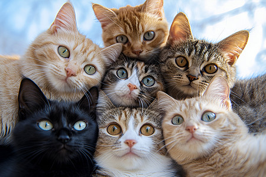

养猫之前你必须要知道的6件事，看完你再决定要不要养猫！
经常听周围朋友说，“啊，一个人好辛苦啊，不如养条猫吧。”，“哇，小猫好可爱，好想养一只哦！”结果往往是第一天朋友圈还在晒着小猫的萌照，一星期后就变成“求领走”了。
因为种种原因，导致心血来潮买了猫的人没能把猫继续养下去。由此可见，养猫之前必须做足功课，不然到最后无论是猫还是人，都会很不开心。
好，恐吓完毕，接下来小编分类概述一下养猫须知。新手奶爸如果不想重蹈覆辙的话，那养猫之前就一定要知道这6件事。
首先，猫咪是纯肉食动物，日常饮食需满足高蛋白、中脂肪、低碳水的需求，避免喂食人类食物
第二件事就是猫咪的 “沉默” 特性容易掩盖疾病，定期医疗检查和基础免疫能及时发现健康隐患
第三件事就是猫咪好奇心强，容易接触到家中的危险物品，需提前做好环境排查
第四件事就是猫咪对排便环境极其挑剔，猫砂盆的选择、摆放和清洁直接影响猫咪是否 “乱排便”
第五件事就是猫咪看似 “高冷”，实则需要主人的陪伴和互动，长期缺乏关注易导致猫咪焦虑、抑郁
最后一件事，就是养猫不是 “一时兴起”，需做好长期陪伴的准备，接受猫咪的所有状态
 首页
首页 养猫知道
养猫知道 小猫介绍
小猫介绍 小猫图集
小猫图集 领养小猫
领养小猫 在线留言
在线留言